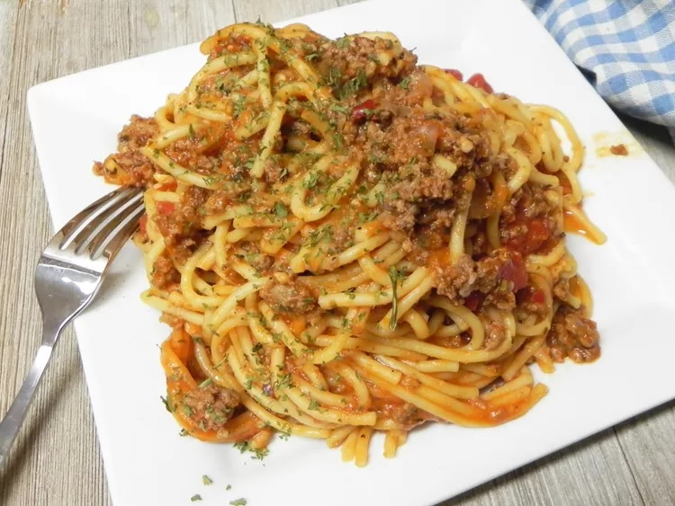

Spaghetti

Overview
This delicious recipe of one of my favorite dishes should only take an overall time of 50 minutes.
The ingredients list shouldn't be too extensive, and most of these ingredients can be found in the cabinet!
The end result should be a creamy, yet delicious, bowl of spaghetti that'll make you say "Now, that's a spicy meatball!"
Ingredients
- 1/2 yellow onion, chopped
- 1 tablespoon olive oil
- 1 pound lean ground beef
- 1 tablespoon Italian seasoning
- 1 teaspoon red pepper flakes
- 1 tablespoon minced garlic
- 1 1/2 teaspoons sea salt
- 1 teaspoon garlic powder
- 1/2 teaspoon ground black pepper
- 3 1/4 cups of water, divided
- 1 (16 ounce) spaghetti, broken in half
- 1 (24 ounce) jar of marinara sauce
- 1 (14 ounce) can diced tomatoes
Steps
-
Turn on a multi-functional pressure cooker (such as Instant Pot®) and select the sauté function. Add onion and olive oil. Cook and stir until onion is slightly soft, about 5 minutes. Add beef, Italian seasoning, pepper flakes, garlic, salt, garlic powder, and black pepper. Cook and stir until beef is browned and crumbly, 5 to 7 minutes. Hit Cancel. Pour 1/4 cup water into the pan and bring to a boil while scraping the browned bits of food off the bottom of the pan with a wooden spoon.
-
Layer spaghetti strands on top of meat in a crisscross pattern. Pour marinara sauce over pasta. Pour diced tomatoes over sauce. Pour remaining 3 cups water around sides and on top of tomatoes. Push down lightly with a spatula to make sure water gets through layers and all pasta is covered.
-
Close and lock the lid. Select high pressure according to manufacturer's instructions; set timer for 5 minutes. Allow 10 to 15 minutes for pressure to build.
-
Release pressure using the natural-release method according to manufacturer's instructions for 5 minutes. Release remaining pressure carefully using the quick-release method, about 5 minutes. Unlock and remove the lid. Stir spaghetti and meat sauce together well before serving.